Project Overview
This portfolio presents our iterative design process from problem framing and research to prototyping, implementation, evaluation, and reflection.
What the system does
Our project transforms campus exploration into a playful and guided experience.
The experience combines building explanations, and story-driven interaction so users can understand not just where a place is, but why it matters.
Key Design Focus
- Human-centered campus exploration
- Proactive information delivery
- Simple and memorable wayfinding
- More meaningful open-day experience
Visual Snapshot
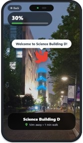
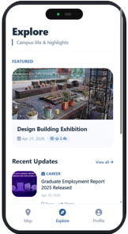
Process Timeline
The timeline below explains how our project moved from initial research to final prototype refinement. It also makes the connection between requirement discovery, design decisions, and evaluation more visible.
Week 1
Problem Framing
Observed open-day campus visiting scenarios and identified that visitors need both directions and contextual understanding.
Week 2
User Research
Defined primary and secondary users, created personas, and summarized key pain points from informal interviews and observations.
Week 3
Requirements
Translated research findings into R1–R4 requirements, focusing on navigation clarity, building meaning, engagement, and low information burden.
Week 4
Prototyping
Produced low-fi sketches, compared design alternatives, and selected a dynamic map/AR toggle to balance clarity and immersion.
Week 5
Evaluation
Collected SUS scores and qualitative feedback from alpha testing, then identified problems in trigger visibility and story presentation.
Week 6
Iteration
Refined hierarchy, route-story connection, audio support, and portfolio presentation to better align with HCI process evidence.
Requirement → Design Goal → System Feature Mapping
To keep the portfolio logically aligned, we numbered the user requirements and mapped them to design goals, prototype features, and evaluation evidence.
| User Requirement | Design Goal | System Feature | Evaluation Evidence |
|---|---|---|---|
| R1: Reduce navigation confusion for first-time campus visitors. | DG1: Lower cognitive load during movement. | F1: Smart route guidance with map-based navigation. | Users reported that the route flow was easy to follow during alpha testing. |
| R2: Help users understand what each building is used for. | DG2: Connect physical spaces with academic meaning. | F2: Story-rich building cards and audio introductions. | Feedback showed that users wanted more major-related and facility-related explanations. |
| R3: Make campus exploration more engaging and memorable. | DG3: Turn passive touring into interactive discovery. | F3: AR overlay, progress tracking, and completion feedback. | Users described the AR/story mode as more attractive than a normal map. |
| R4: Avoid overwhelming users with too much text or manual searching. | DG4: Provide timely information only when it is needed. | F4: Geofenced auto-triggered content when users approach a building. | Iteration focused on reducing text density and improving trigger visibility. |
Research
Visitors feel lost and overloaded.
Requirement
Clearer route and building meaning.
Design Goal
Lower burden, increase engagement.
Feature
AR, story, progress, auto-trigger.
Evaluation
SUS and feedback guide iteration.
01. Motivation & Research
Given that nowadays,
The Why
We chose the Social track because campus visits often create cognitive overload. Users must understand maps, routes, and building functions at the same time.
Our design focuses on helping users understand what each place means, not just where it is. This makes the experience easier to follow and more engaging.
The Gap: Academic Papers
Campus Wayfinding Research
✔ Strong spatial guidance
✔ Useful navigation insights
✔ Practical campus orientation
✘ Limited emotional engagement
✘ Weak storytelling
✘ Less focus on open-day visitors
AR Navigation Studies
✔ Reduces navigation difficulty
✔ Improves route understanding
✔ Engaging interaction form
✘ Often requires manual activation
✘ Less building interpretation
✘ Weak academic context
Multimodal Interaction Research
✔ Supports visual + audio guidance
✔ Helpful for accessibility
✔ Lowers missed information
✘ Not tailored to campus storytelling
✘ Weak place meaning explanation
✘ Limited playful design
The Gap: Commercial Products
Google Maps
✔ Strong navigation and usability
✔ Familiar interface
✔ Efficient routing
✘ No campus storytelling
✘ No proactive information
✘ Limited context understanding
Campus Guide Apps
✔ Campus-specific POIs
✔ Helpful building lists
✔ Useful for first-time visitors
✘ Static browsing experience
✘ Weak immersion
✘ Users must search manually
Audio Guide Products
✔ Easy content delivery
✔ Reduces reading burden
✔ Good for passive listening
✘ Weak route integration
✘ No AR assistance
✘ Limited real-time context
Stakeholders & Personas
Stakeholders
We considered different stakeholders because the open-day experience is not only used by students, but also influenced by parents, ambassadors, and university staff.
- Primary users: high school graduates who want to explore majors, buildings, study spaces, and campus life.
- Secondary users: parents and first-time visitors who care about safety, learning environment, and facilities.
- Other stakeholders: student ambassadors and university staff who need to communicate campus information clearly.
Personas
The student persona highlights exploration and major choice, while the parent persona highlights trust, environment, and practical campus information.
Student Persona
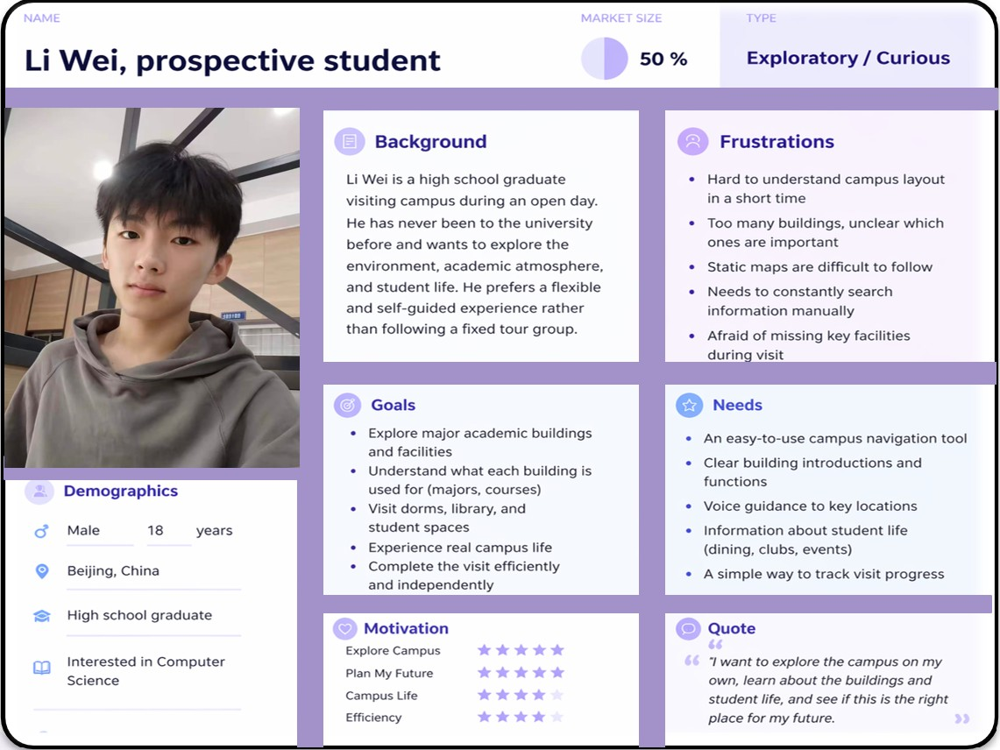
Parent Persona
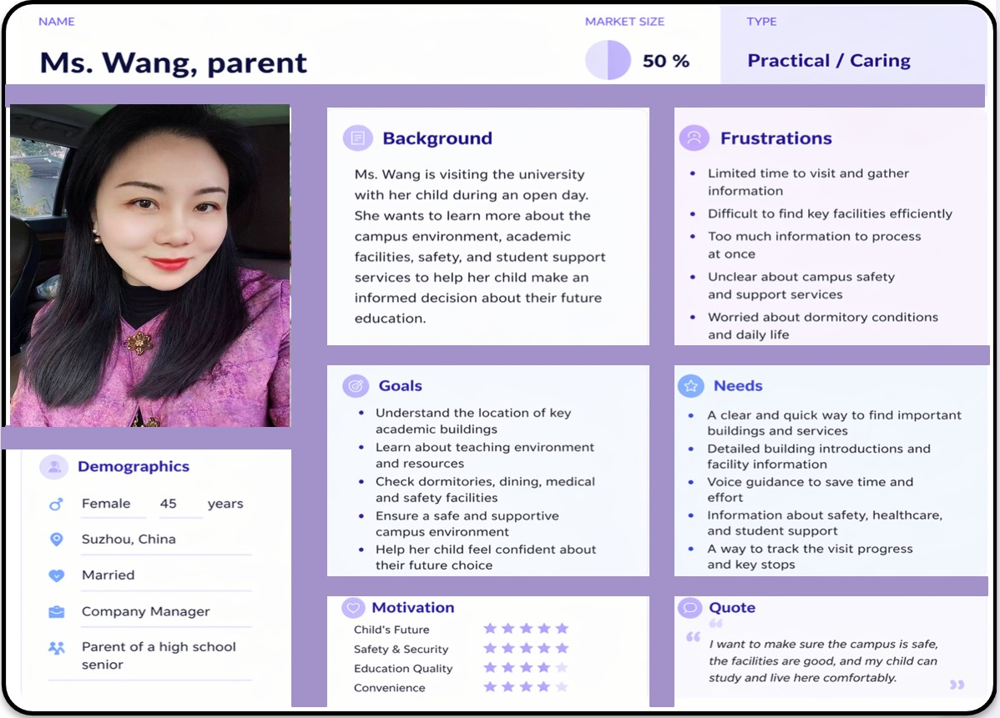
02. User Requirements
We translated research into journey pain points, functional needs, and evidence from real users.
User Journey Map
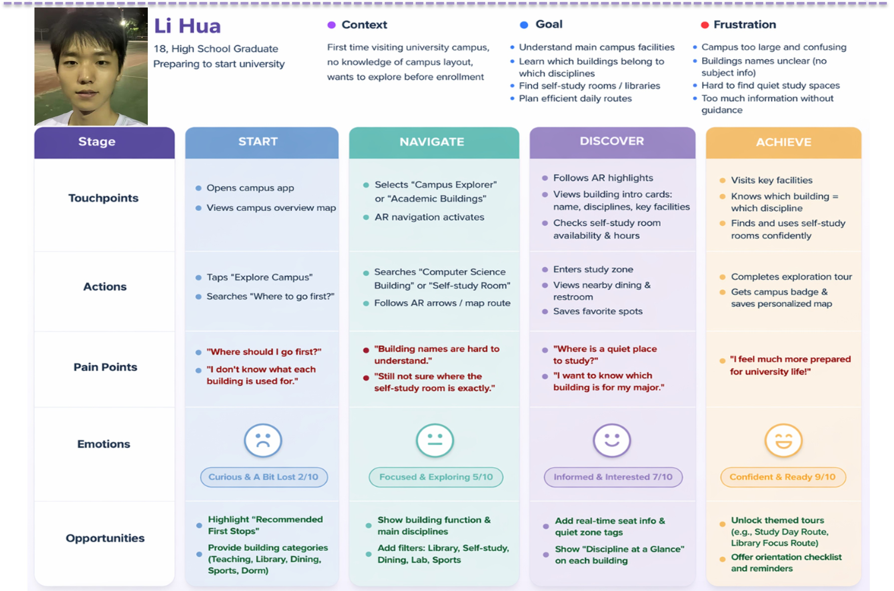
START
Users arrive on campus with limited knowledge of what to prioritize and where to begin.
Emotion: ConfusedNAVIGATE
Users try to follow a route but may find it difficult to connect the map with the real environment.
Emotion: HesitantDISCOVER
Users arrive at a building but may not understand its purpose, including related majors or learning activities.
Emotion: CuriousACHIEVE
Users want to leave the tour with a clear understanding of campus life instead of fragmented impressions.
Emotion: AccomplishedPlayful Requirements
- Automatic interaction instead of manual searching
- Clear and simple navigation flow
- Engaging feedback through progress and completion
Additional User Needs
- Simple explanation of building purpose
- Clear connection to majors and courses
- Low reading burden through audio support
- Efficient visit planning on open day
Evidence of Life
We conducted informal interviews and on-site observation to understand how visitors experience campus tours and what support they expect.
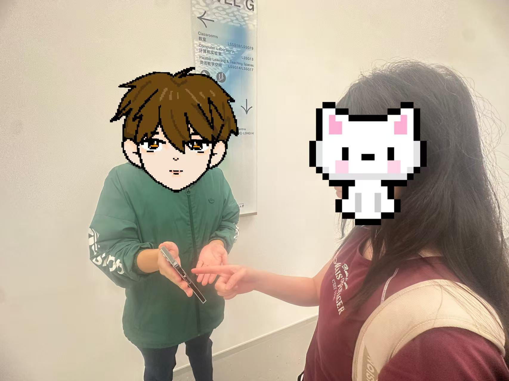
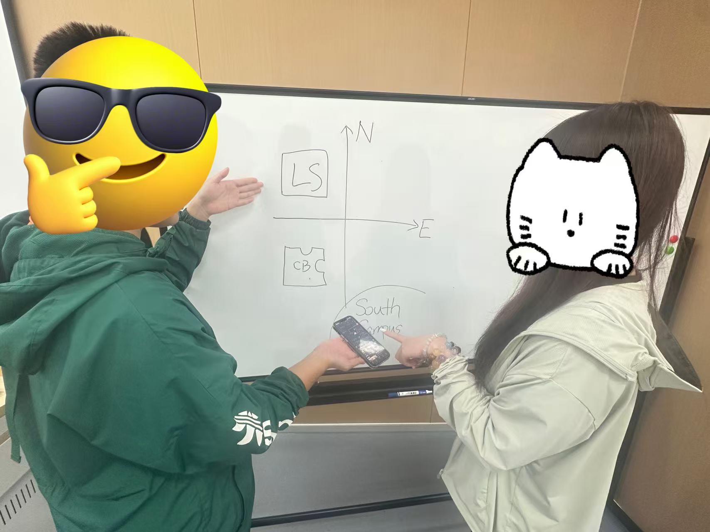
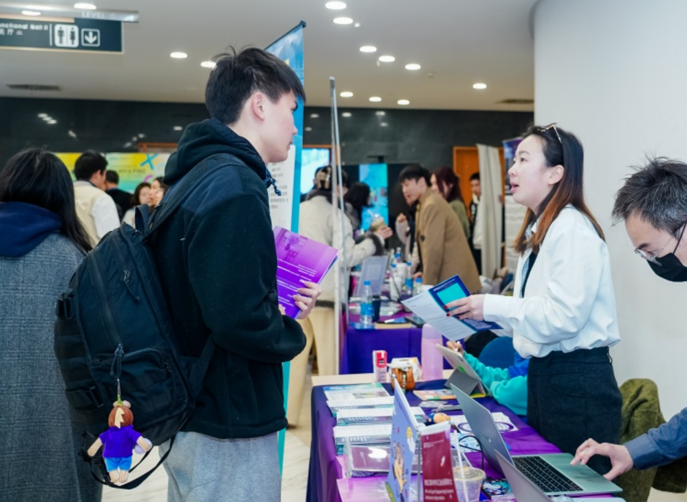
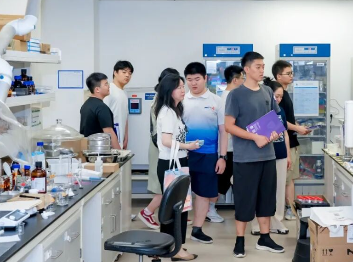
Ethical Considerations
Because our process involved user feedback, photos, and observation, we considered ethics before collecting evidence. This helps make the portfolio process more responsible and transparent.
Informed Consent
Participants were informed about the purpose of the study before interviews, testing, or photo recording. Participation was voluntary.
Privacy Protection
Personal identities are not shown in the final portfolio unless permission is given. Feedback is summarized rather than exposing private details.
Responsible Location Use
The prototype uses location only for nearby building triggers. The design does not require permanent storage of users' movement history.
03. Ideation & Iteration
We explored multiple interface directions and refined the solution through low-fi and high-fi prototyping.
Low-Fi Sketch & Iteration Summary
We present one complete low-fidelity board together with the iteration summary to show both early exploration and design evolution more clearly.
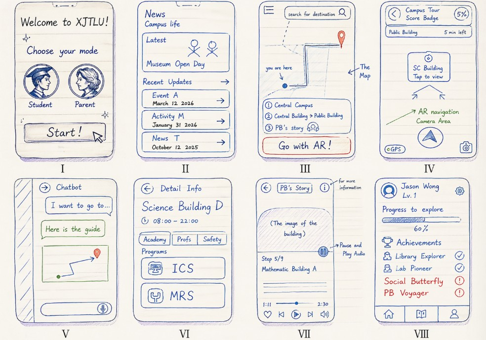
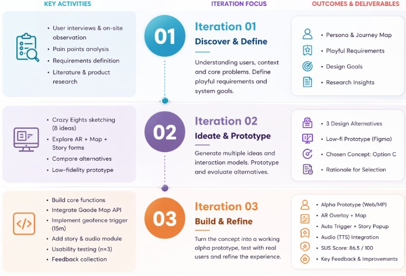
Design Alternatives
We did not choose the final layout only because it looked better. We compared alternatives based on cognitive load, route awareness, and whether users could still observe the real campus while receiving guidance.
Option A: Split Screen
Top half AR camera and bottom half 2D map.
- Comprehensive information
- Easy to compare route and environment
- But visually crowded on mobile
Option B: AR-dominant
Full-screen AR with a small floating map.
- Immersive experience
- Strong local guidance
- But weaker global route awareness
Option C: Dynamic Toggle
2D map by default, AR appears when context requires it.
- Reduces cognitive load
- Balances clarity and immersion
- Better for open-day visitors
Low-Fi to High-Fi Progression
Low-Fi Prototype
Early sketches focused on route entry, story pop-up timing, and the balance between map and AR layers.
High-Fi Prototype
Later iterations refined hierarchy, spacing, interaction clarity, and the visual quality of the interface.
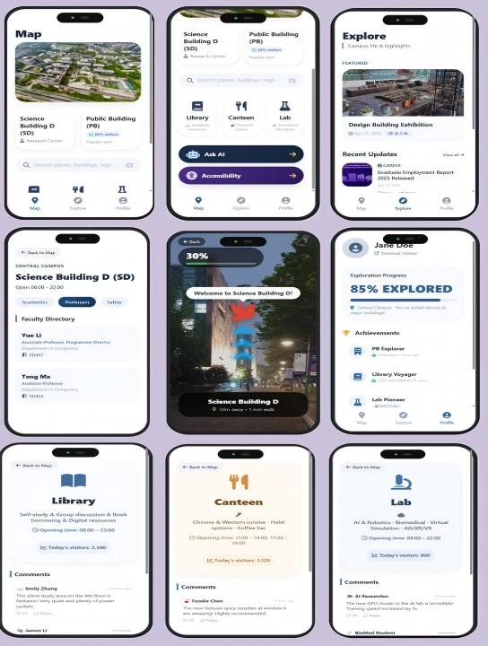
04. Technical Implementation
The final prototype integrates interface design, trigger logic, and data flow into one coherent system.
System Architecture
Mobile Device
Location, camera, and user interaction
Mini Program / Web App
Map UI, AR layer, story interface
Trigger Logic
Distance check and 15m activation
Campus POI Data
Buildings, facilities, labels
Gaode API
Routing and map service
Story / Audio Layer
TTS, descriptions, content delivery
Core Features
📍 Smart Trigger
Automatically provides information based on user location.
🧭 Dual Navigation
Curated and smart routes support different user needs.
🎧 Story Mode
Explains buildings through short and clear descriptions.
📱 AR Overlay
Bridges digital route guidance with the real campus environment.
Prototype Links
Figma Prototype: https://www.figma.com/make/zAlDD24fINHjJgL6vvyKog/Design-WeChat-Mini-Program?t=9GTnhCyllxKmVOKq-1&preview-route=%2Fbuilding
Hosted System: Replace with your deployed project link
Source Repository: Replace with your GitHub link
Visual Hierarchy Upgrade
In later iterations, we improved spacing, section grouping, card contrast, and image-supported storytelling so the portfolio reads more like a professional UX case study.
Individual Contributions
| Member | Student ID | Main Contribution | Details |
|---|---|---|---|
| Yixin Hao | 2362273 | UI Design & Visual Refinement | Worked on interface aesthetics, layout quality, and visual presentation. |
| Yizhi Wang | 2364133 | Front-end Implementation | Built the HTML/CSS structure and integrated portfolio content. |
| Jianlin Zeng | 2359984 | Technical Logic & System Structure | Contributed to data flow, trigger logic, and architecture planning. |
| Mingyang Zou | 2363214 | Research & Evaluation | Collected references, supported user testing, and analyzed findings. |
05. Story-rich Building Introduction Design
This section shows how our system explains what each building represents and how it connects to student learning and campus experience.
Design Rationale
Many visitors can find buildings, but cannot understand their academic meaning or student experience. Our system adds a storytelling layer to make each stop informative and memorable.
Foundational Building
Core Teaching HubThis building represents the starting point of university learning. It is where students develop foundation knowledge before entering more specialized study.
Students may study mathematics, academic English, and critical thinking here. These modules support university-level learning.
Science Buildings (SA / SB / SC / SD)
Science & Laboratory ZoneThis area represents the university’s scientific and research environment.
Students engage in lab-based learning in subjects such as biology, chemistry, and environmental science. Learning here is both theoretical and hands-on.
Central Building / Library
Learning CommonsThe library reflects the culture of independent learning and daily academic life.
Students use this space for studying, group discussion, and preparing assignments. It is a shared learning environment for all majors.
IBSS Building
Business & Management EducationThis building represents business and management education.
Students study areas such as finance, economics, and marketing. The focus is on real-world business problems and future career preparation.
Story-driven Interface Preview
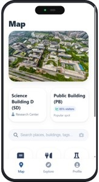
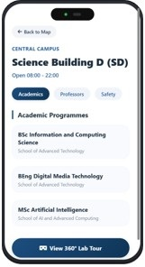
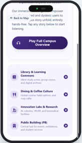
Why This Matters
By linking buildings to learning and experience, the system helps users understand the campus more clearly and makes the visit more meaningful.
06. Evaluation & Reflection
We evaluated the alpha version with real users and refined the design based on feedback.
Usability Testing
The prototype achieved a SUS score of 86.5, indicating high usability.
- Easy to understand
- Clear navigation flow
- Reduced user confusion
Design Implications
- Improve trigger visibility
- Strengthen story explanation in building details
- Further connect route planning with learning content
Evaluation Findings & Design Response
The evaluation was used not only to report usability, but also to decide what should be improved in the next iteration.
| Evidence / Feedback | Interpretation | Design Response |
|---|---|---|
| Some users were unsure when the story or AR mode would appear. | The trigger mechanism was useful but not visible enough. | Added clearer trigger indication and distance-based feedback. |
| Users preferred short explanations while walking. | Long text increases reading burden during physical navigation. | Reduced text density and strengthened audio-based building introductions. |
| Users wanted to know how buildings relate to majors and learning. | Navigation alone cannot fully support open-day decision making. | Added story-rich building cards linking spaces to courses, facilities, and student life. |
| The average SUS score was 86.5. | The overall interaction was usable, but detail-level clarity still needed refinement. | Improved visual hierarchy, progress tracking, and route-story connection. |
Iterative Refinement
Before
Earlier screens focused more on navigation mechanics and less on the meaning of places.
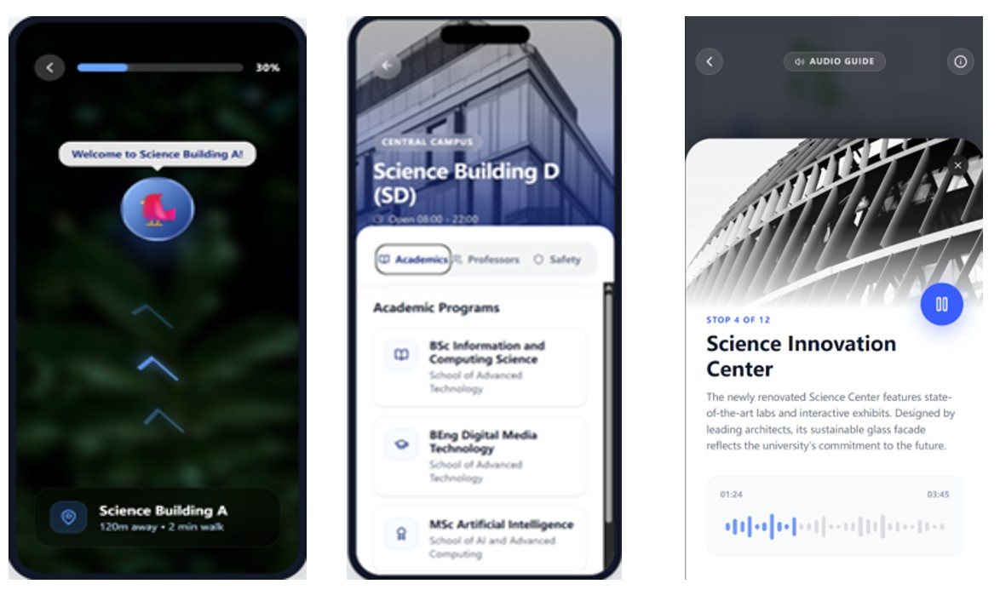
After
Later iterations improved structure, hierarchy, and the educational value of each stop.
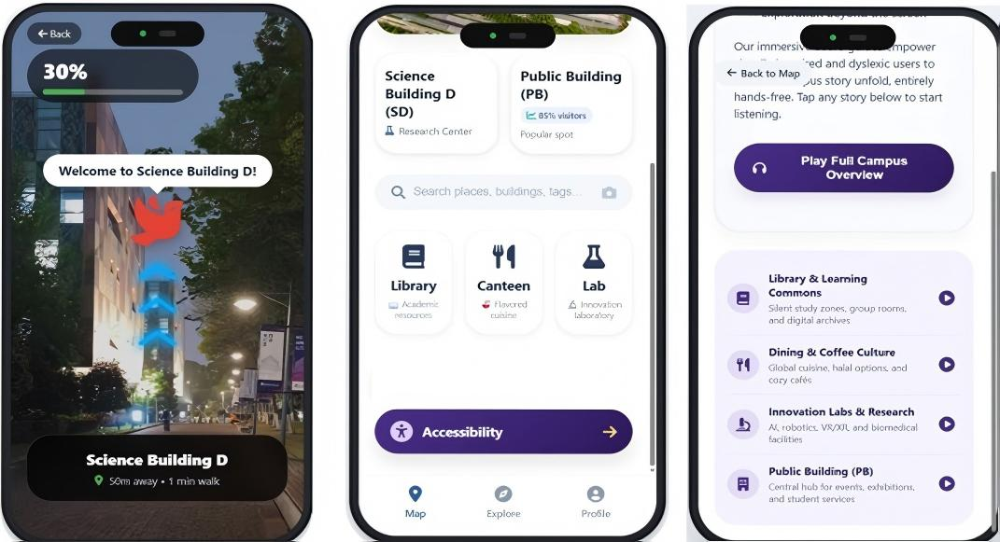
Final Reflection
This project shows that campus navigation is not only about movement, but also about understanding and belonging. By embedding building stories into the route, we help visitors interpret the campus as a real learning environment rather than a series of unknown spaces.
Future work could include richer verified building content, more personalized recommendations, and expanded accessibility support.
07. Vibe Coding & AI-assisted Process
This section reflects on how AI-assisted coding and design tools supported our prototype and portfolio development.
How We Used Vibe Coding
Vibe coding helped us quickly transform ideas into interface drafts, layout variations, and HTML/CSS prototypes. However, we treated AI output as a starting point rather than a final design decision. Human-centered judgement, user requirements, and evaluation evidence were still used to decide what should remain in the final prototype.
Tools Used
- ChatGPT for structure, wording, and HTML/CSS refinement
- Figma / prototype tools for interface layout
- Image assets and visual references for presentation quality
What Worked
- Fast exploration of multiple layout options
- Improved visual hierarchy and card-based structure
- Helped convert design reasoning into clearer portfolio sections
What Did Not Work
- Some generated interfaces looked attractive but were too information-heavy
- AI suggestions sometimes focused on style more than usability logic
- Manual checking was needed to keep requirements, features, and evaluation aligned
Reflection on AI-assisted Design
Team
Group D-6 members and contribution areas.
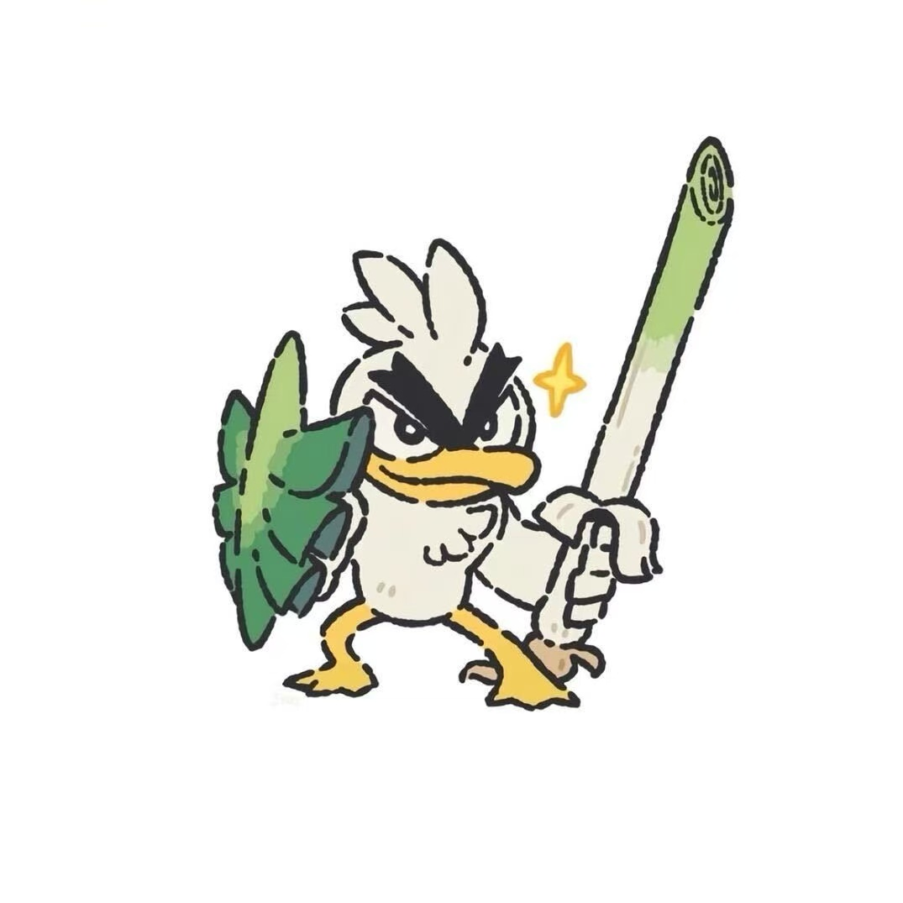
Yixin Hao
2362273
UI Design / Visual Refinement
Yizhi Wang
2364133
Front-end / Integration
Jianlin Zeng
2359984
Architecture / Technical Logic
Mingyang Zou
2363214
Research / Evaluation / Analysis